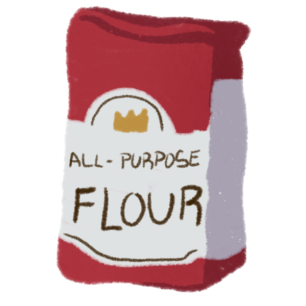
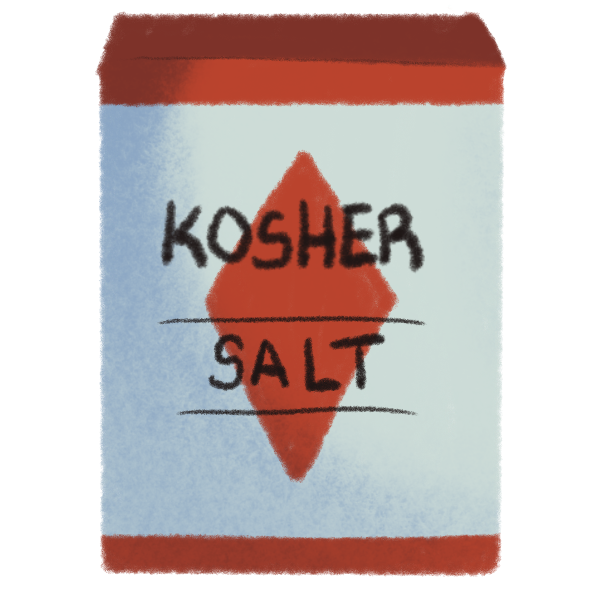
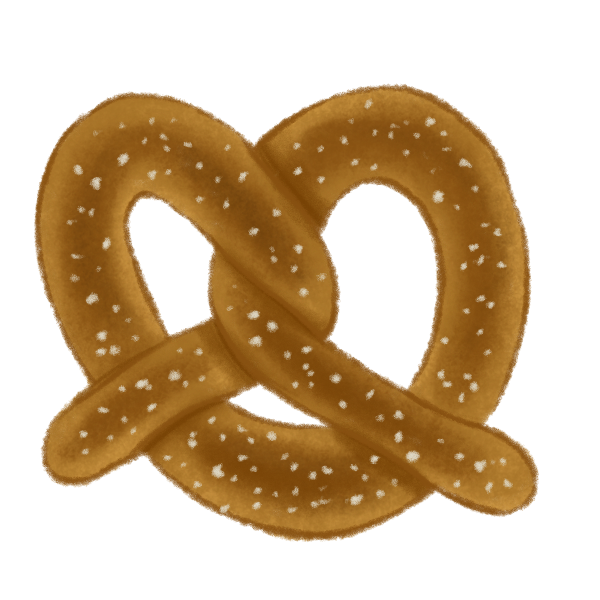

1. In a medium bowl, dissolve yeast and 1 teaspoon of sugar in 1 1/14 cups warm water. Let stand until yeast forms a creamy foam, about 10 minutes.
2. In a large mixing bowl, combine flour, 1/2 cup of sugar, and 1 1/2 teaspoon salt. Make a well in the center. Add yeast mixture and 1 tablespoon of oil to the well. Mix well to form a dough, adding a tablespoon or two more water if needed.
3. Knead dough until smooth (this should take around 7 minutes). Lightly oil a large bowl, and place the dough inside, turning the ball over to coat in oil. Cover bowl with plastic wrap and let rise in a warm place for about an hour until it has doubled in size.
4. Preheat oven to 450 degrees Fahrenheit. Grease 2 baking sheets.
5. Pour 4 cups of hot water into a large bowl. Add baking soda nad stir until dissolved. Set aside for now.
6. Transfer dough to lightly floured surface. Divide into 12 even pieces. Roll each piece into a rope, about 15-18 incles long. Twist the ends together and fold dough in the opposite direction over the bottom curve to form a pretzel shape.
7. Once dough is shaped, dip each pretzel into hot water-baking soda bath, then place onto prepared baking sheet. Sprinkle with kosher salt.
8. Bake until browned, about 8 minutes. Brush with melted butter after baking.

Pretzels originated in medieval Germany. Their distinctive shape symbolized the Holy Trinity and resembled hands folded in prayer. Pretzels were given to children as a reward for learning their prayers, strengthening their religious connotations.